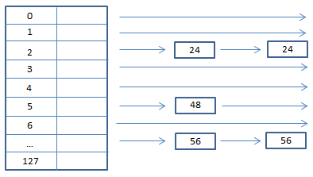

Frontend allocator Lookaside
The frontend allocator - Lookaside
The lookaside list is a singly linked list used to store heap chunks that are under 1016 bytes (max: 1016+8). The idea behind the lookaside list is to enable speed and rapid lookup time. This is because applications execute multiple HeapAlloc()'s and HeapFree()'s during the processes run-time. Because it was designed for speed and efficiency, it allows no more than 3 free chunks per list entry. If HeapFree() is called on a chunk and there are already 3 entries for that particular chunk size, then it is freed to the Freelist[n].
The heap chunk size is always calculated to the actual size of the allocation + an additional 8 bytes due to its header. So if the allocation is made for 16 bytes, then the lookaside list would be scanned for chunk sizes of 24 bytes (16 + chunk header). In the case of the below diagram, the windows heap manager would succeed and find an available chunk at index 2 of the lookaside list.
The lookaside list contains only an flink pointing to the next available chunk (user data).
| click me | click me | click me | click me | click me | click me | click me |
|---|
| Headers | Self Size (0x2) | Prev Size (0x2) | Cookie (0x1) | Flags (0x1) | Unused (0x1) | Segment index (0x1) |
| flink/blink | Flink (0x4) | | | | | |
| Data | | | | | | |

When the windows heap manager gets an allocation request, it looks for a free chunks of heap memory that can fulfil the request. For optimization and speed, the windows heap manager will first walk the lookaside list to begin with (due to its singly linked list structure) and try to find a free chunk. If the chunk is not found here, the windows heap manager will try the back-end allocator. This is where the heap manager will walk the freelist (between freelist[1]-freelist[127]). If no chunk is found, then it will walk the freelist[0] entry for a larger chunk and then split the chunk. A portion will be returned to the heap manager and the rest will return to freelist[n] (n is the index based on the remaining bytes in size). This brings us to the next section, heap operations.